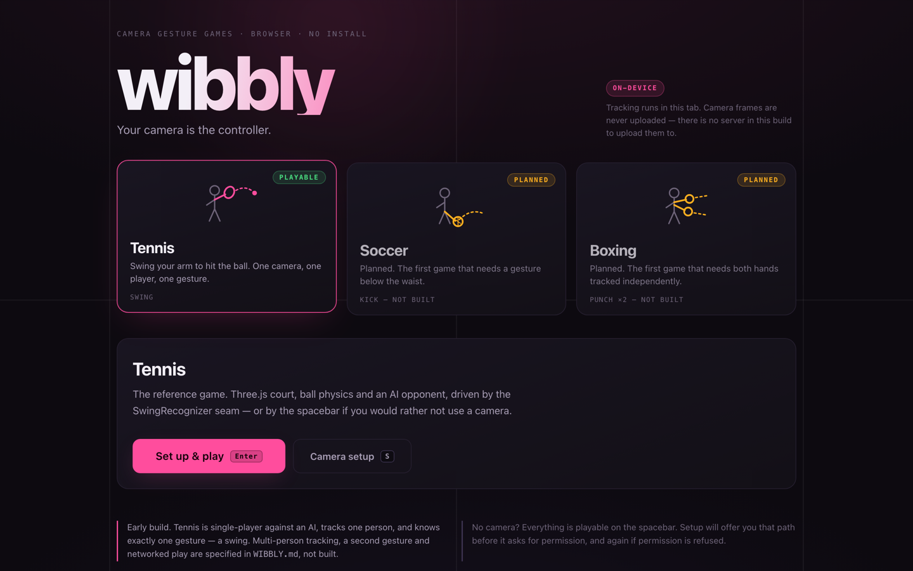
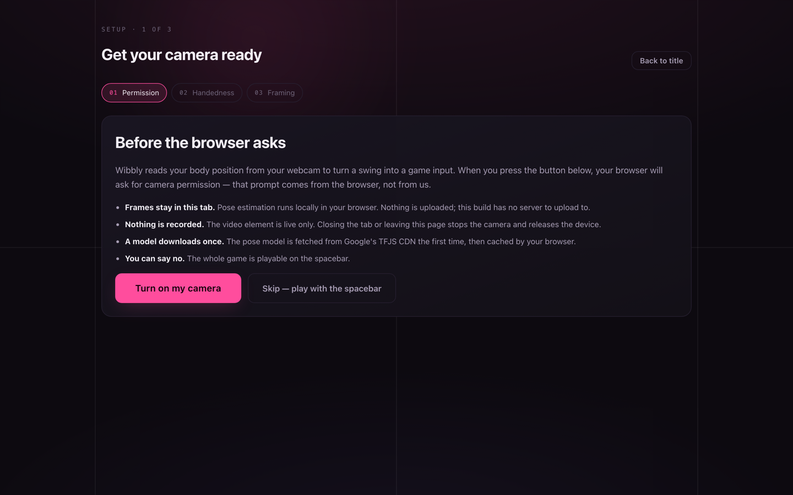
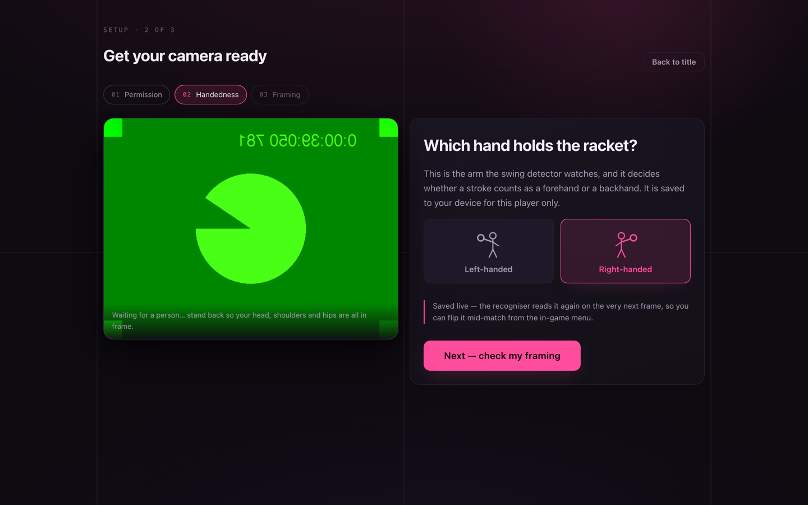
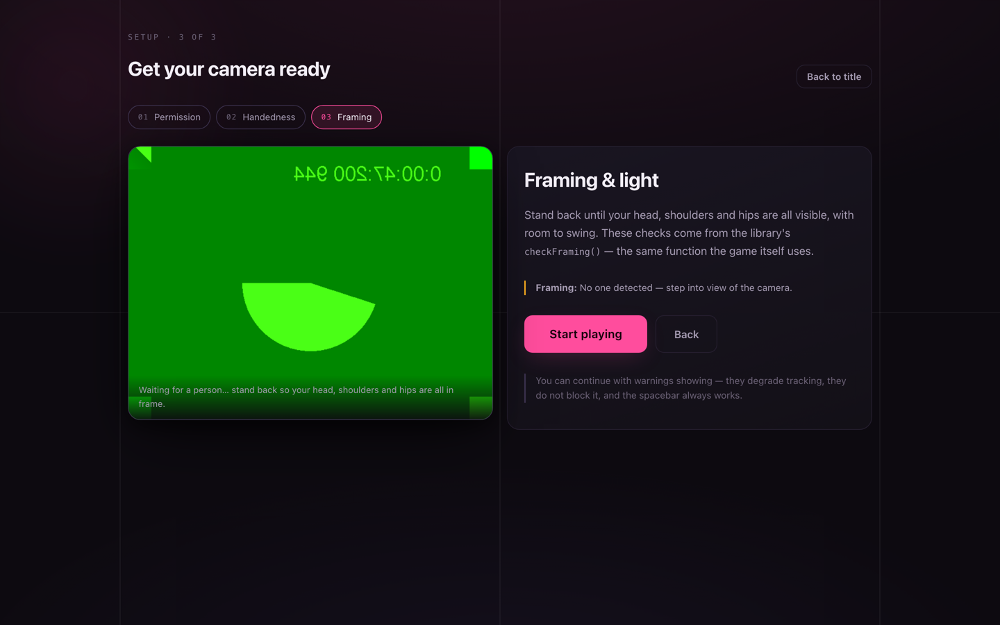
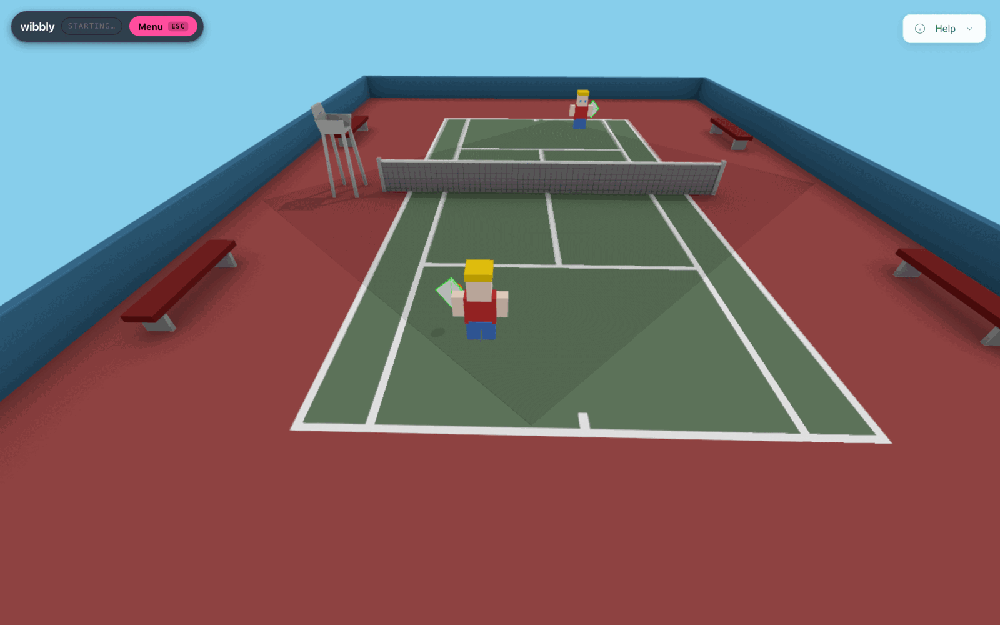
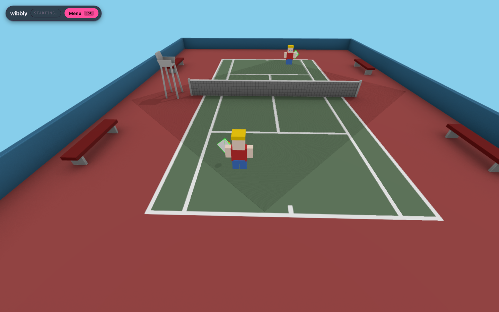
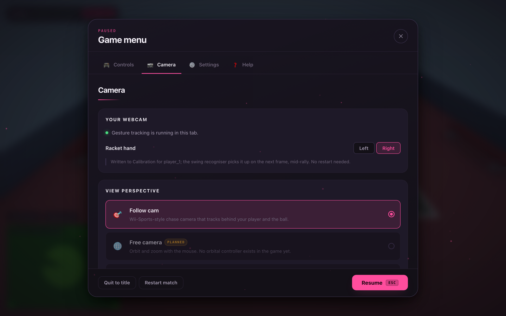

Your camera is the controller
Swing your arm. Hit the ball. That's the whole controller.
wibbly is a tennis game you play by moving. No gamepad, no download, no account — open it in a tab, let it see your webcam, and swing. Tracking runs entirely on your own device; the video never goes anywhere. It's free and open source, MIT OR Apache-2.0 on GitHub.
No sign-up. No camera? Everything works with the spacebar too.

Tennis. That's what you can play right now — a real Three.js court with an AI opponent.
A swing. That's the entire vocabulary today — no serve, no kick, no punch, no pinch yet.
Free, forever, no account. Say no to the camera and the spacebar plays the whole game.
Early, on purpose, said plainly: Soccer, Boxing and playing with a friend over the internet are all planned — you'll see them named on the title screen — but none of them are playable yet. Nothing here is exaggerated to look further along than it is. The full picture, including exactly what's built versus what's just designed, is in the docs.
A first run, in six real screenshots
Every image below is a real, unedited capture of the actual app — nothing is composited or staged. First run walks you through a short setup, then you're on the court.






A few more are on the way
wibbly can grow to more games because the camera tracking underneath isn't tied to tennis — but right now, tennis is the only one you can actually play by moving.
Tennis
Single player against an AI, right or left handed. A real court, real ball physics.
Soccer
Named on the title screen, not clickable. A kick is a different kind of gesture, and it doesn't exist yet.
Boxing
Also named, also not clickable. Needs both hands tracked at once, which nothing does yet.
Palmworks
A separate factory-building game bundled in this repo. Play it with a mouse and keyboard — it isn't wired to your camera.
What you actually need
Nothing to buy, nothing to install. If you have a laptop with a webcam, you have everything.
Is my camera being watched?
No. Nobody sees your camera — not us, not a server, not another player. Your video never leaves your device. Not a policy promise: there's no code anywhere in wibbly that could send it anywhere.
This is a guarantee, not a promise, because you can check it yourself — wibbly is free and open source. Read the plain-language walkthrough, including the one honest limit (privacy is not the same thing as proving a swing is real), in the full Privacy page.
Part of the Vulos suite
Vulos is a family of free, self-hostable software. wibbly runs entirely on its own — no Vulos account, no Vulos server, nothing to sign into — and shares the suite's belief that your camera, your data and your computation should stay on hardware you control. Under the hood it's built on magnetite, an open, self-hostable games platform; the technical detail on how they connect is in the docs, not on this page.
Read the docs → Explore Vulos →